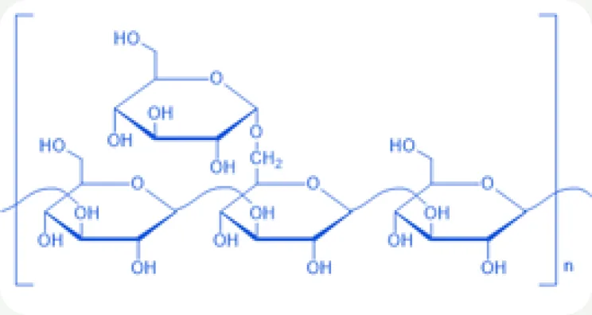
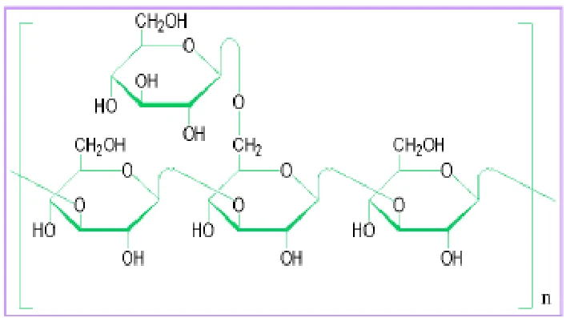
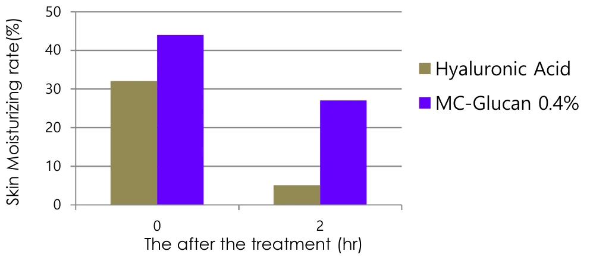
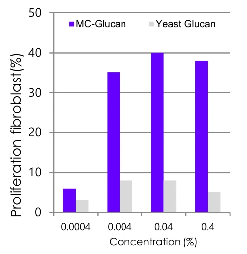
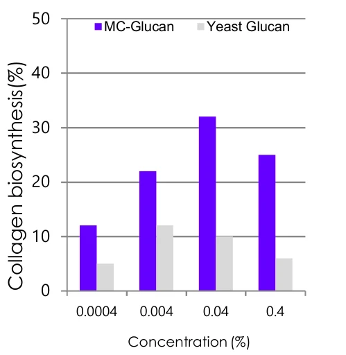

Ingredient research
MS-Glucan
피부 보호와 보습을 위한 글루칸
01 / Overview & Strengths
개요 & 특장점
치마버섯에서 추출한 버섯 균사체를 배양하여 얻은 β-1,6-branched-β-1,3-glucan 구조의 고순도 정제품입니다. 피부의 면역력을 높임으로써 보다 건강하고 활력 있는 피부로 가꾸어 주며, 항염증 및 자극완화 효과가 있어 자외선과 유해환경으로부터 시달리는 피부를 보호해주는 제품입니다.
※ 자세한 자료는 직접 문의 부탁드립니다.
Product features / Product Strengths
- 자극완화 효과
- 일광화상치유 효과
- 보습 효과
- 항염 효과

02 / Technical Information
기술 자료
Product Name : MC-Glucan
원료 기본 규격 및 제품 카탈로그
- INCI Name
- Schizophyllan
- CAS No.
- 9050-67-3
- M.O.Q.
- 20KG
- Pack Size
- 20KG
- Appearance
- Liquid
- Dosage
- 1~30%
- 함량
- 0.4%
- 특징
- MC-Glucan
Product Name : MC-Glucan NP
원료 기본 규격 및 제품 카탈로그
- INCI Name
- Schizophyllan
- CAS No.
- 9050-67-3
- M.O.Q.
- 20KG
- Pack Size
- 20KG
- Appearance
- Liquid
- Dosage
- 1~30%
- 함량
- 0.4%
- 특징
- MC-Glucan NP
Product Name : MC-Glucan LMW
원료 기본 규격 및 제품 카탈로그
- INCI Name
- Schizophyllan
- CAS No.
- 9050-67-3
- M.O.Q.
- 20KG
- Pack Size
- 20KG
- Appearance
- Liquid
- Dosage
- 1~30%
- 함량
- 0.4%
- 특징
- MC-Glucan LMW
Product Name : MC-Glucan
원료 기본 규격 및 제품 카탈로그
- INCI Name
- Sclerotium Gum
- CAS No.
- 9050-87-4
- M.O.Q.
- 20KG
- Pack Size
- 20KG
- Appearance
- Liquid
- Dosage
- 1~30%
- 함량
- 0.1%
- 특징
- MC-Glucan
※ 운영 사이트 규격표의 제품명은 MC-Glucan으로 표기되어 있어 MS-Glucan 해당 규격 확인이 필요합니다.
03 / Research Data
기타 데이터
- 고순도 β-글루칸
독자 균주의 버섯 균사체를 액체 배양해 얻은 β-1,6-branched-β-1,3-glucan을 고순도로 정제했습니다.
- 면역 강화 구조
가지 구조와 균일한 구조 덕분에 다른 β-1,3-glucan보다 면역 강화 작용이 활발합니다.
Source
치마버섯 균사체 발효
치마버섯(Schizophyllum sp.) 균사체를 발효 배양해 얻는 바이오 폴리머입니다.

Structure
Schizophyllan 구조
β-1,3-glucan 주사슬에 β-1,6 가지가 결합한 균일한 구조입니다.
Effect주요 효능
- 항염 · 피부 면역 강화
- 자극 완화 · 일광화상 회복
- 보습 · 주름 개선
- 우수한 사용감
- 미백

MC-Glucan 0.4% 용액 또는 히알루론산 0.5% 용액 60㎕를 팔 안쪽 피부에 바르고 테이프로 덮은 뒤, 전기전도도 측정으로 피부 수분을 평가했습니다.

MC-Glucan이 인간 피부 세포 · 섬유아세포 증식에 미치는 영향

MC-Glucan · Yeast Glucan 처리 후 콜라겐 합성 증가
Comparison of MC-Glucan with other Glucans — 다른 글루칸과의 비교
| 구분 | MC-Glucan | Yeast β-Glucan | Plant β-Glucan |
|---|---|---|---|
| 수용성 Water Solubility | 용해 | 불용 | 용해 |
| 면역 강화 Immune Enhancement | +++++ | ++ | ++ |
| 생산 기술 Production Technology | 발효 | 추출 | 추출 |
| 원료 Source | 버섯 (Schizophyllum sp.) | 효모 (Saccharomyces Cerevisiae) | 식물 (귀리 · 보리) |
| 주성분 Major Component | β-1,6-branched β-1,3 glucan | β-1,3 glucan | β-1,3 · β-1,4 glucan 혼합 |
| 균일성 Homogeneity | 균일 | 불균일 | 불균일 |
| 온도 안정성 Temp. Stability | +++ | +++ | +++ |
| pH 안정성 pH Stability | +++ | +++ | +++ |
Commercialized Glucan Products
- MC-Glucan 0.4% Schizophyllan 고순도 β-글루칸 0.4% 용액 원료 보기→
- MC-Glucan NP Schizophyllan 무보존제 타입 (Non Preservative) 원료 보기→
- MC-Glucan LMW Schizophyllan 저분자 타입 (Low Molecular Weight) 원료 보기→
-
MS-Glucan 1%현재 원료 Sclerotium Gum 스클레로튬검 1% 타입
원료 품질 시험 항목 및 기준 · MC-Glucan 0.4% 기준
- Appearance
- Colorless to light yellow liquid
- Odor
- Subtle characteristic odor
- pH
- 6.0 ~ 8.0
- Viscosity
- 340 ~ 410 cps
- Glucan Content
- 0.4% (w/w)
- Heavy Metals
- Max. 20 ppm
- Arsenic
- Max. 2 ppm
- Microbial Count
- Max. 100 cfu/g
- Dosage
- 1 ~ 30%
※ 출처: MacroCare Onepage Catalogue · Bio-Polymer (MC-Glucan). 그래프 · 사진은 원문 자료를 사용했습니다. 효능 · 비교 · 규격 데이터는 MC-Glucan(Schizophyllan) 0.4% 기준입니다. 상세 시험 조건은 별도 문의해 주세요.